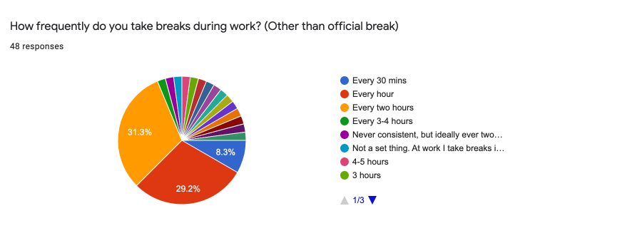
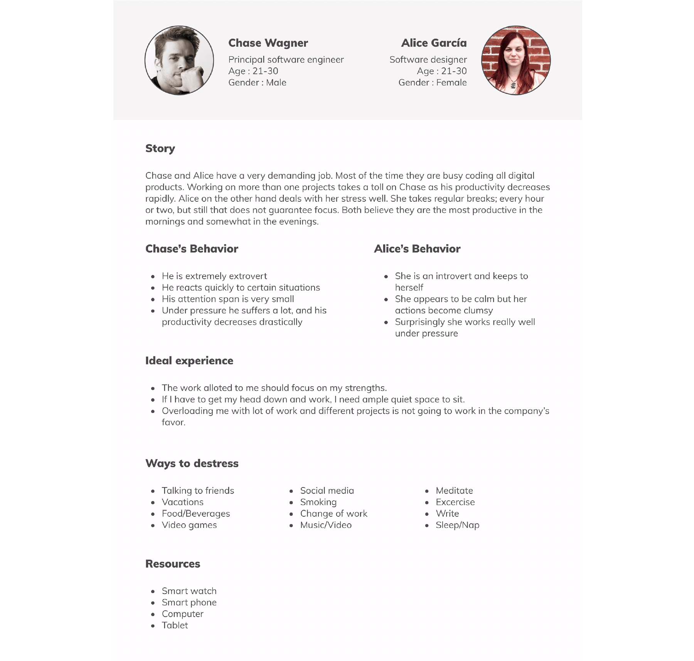
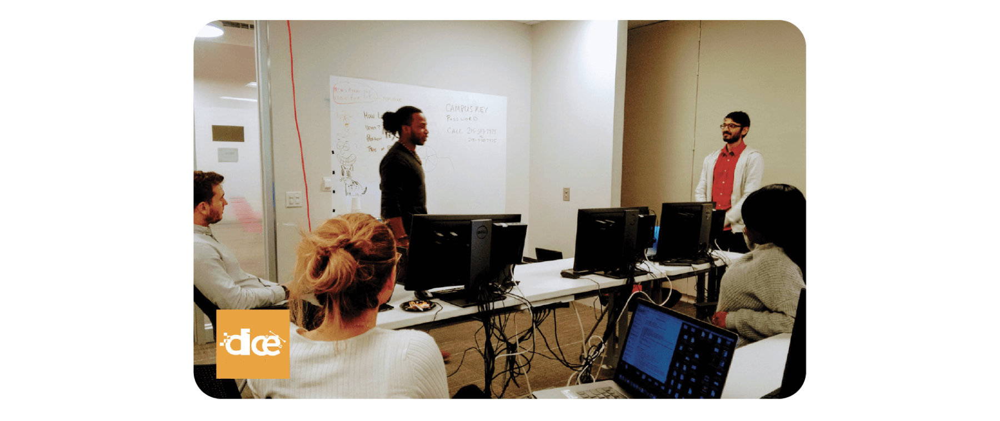
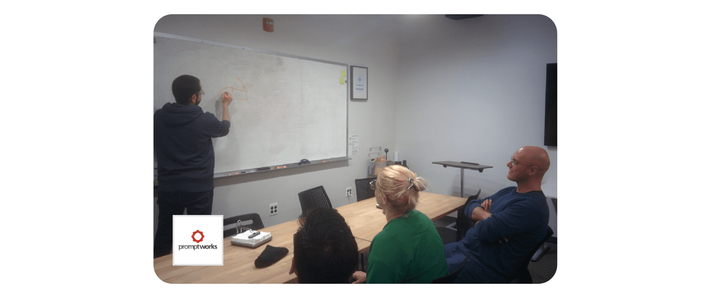
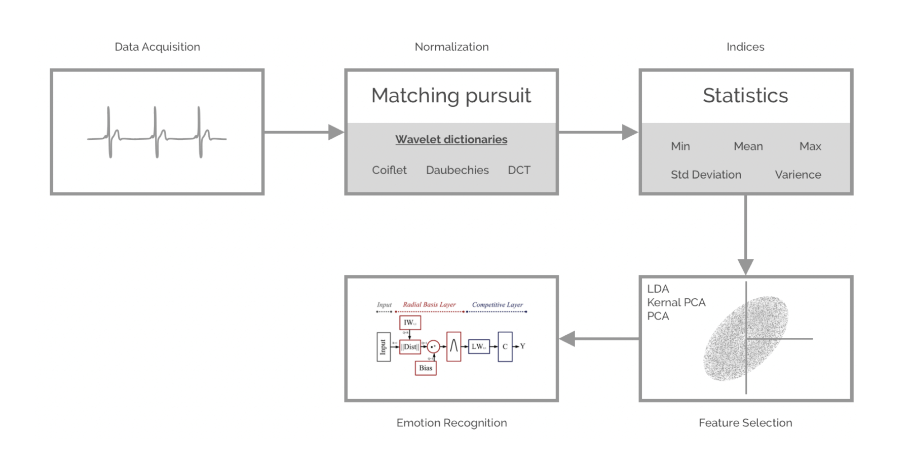

It is known that high intensity occupational stress among digital industry professionals reduces their performance level drastically and may also lead to anxiety, affecting health and wellbeing. Currently there is no convenient way or system to identify / validate / quantify existence of stress developed at work and to effectively deal with it at once by empowering individual professionals.
I believe that if we collect biofeedback and other information with the sensors such as ECG / PPG, accelerometer, gyroscope, GPS, time, weather etc., process the data so collected by employing machine learning algorithms, then we will be able to make intelligent guesses about emotion states of the users and quickly support, motivate, suggest through gamified experiences to take appropriate actions so as to help maintain stasis, ultimately boosting efficiency of digital industry professionals by at least 10% - 15% over a year.
The research will involve both, quantitative and qualitative as well as experimental methods. The tools like questionnaires, observations and rating scale sheets are specially designed and used for the purpose, followed by interviews. The data so collected is carefully analyzed and considered for taking design decisions.
Digital professionals might carry stresses caused by personal or relational problems not related to their work. Besides, many stressors at work are managerial issues like work environment, inadequate facilities, poor planning, lack of clear instructions, frequent disturbances, work overload, etc. Dealing with this kind of stressors is outside the scope of this study.
The present project focuses only on some typical person oriented stressors of digital professionals at the workplace and how these can be dealt with. Just a few stressors are selected out of many, viz — cognitive overload, extended concentration, long sitting, and eye strain. More specific type of stressors like imposter syndrome, the paradox of choices, complex problem solving, multi-tasking, etc. are not dealt with in the present short span of the study.
The next section will discuss briefly what may be best described as Psychophysiology of stress and then attempt to show how biofeedback can be helpful in detecting the existence of stress, in measuring its quantity, and also in predicting probable emotion state of the subject. This technology can go a long way to make smartphones and wearables more human-like machines. introduction
In human life, everyone encounters stressful situations on an almost daily basis, from minor pressures that we hardly notice, to occasional traumatic conditions which can cause ongoing stress. But what is it that causes stress? Psychologists have listed several ‘stressors’ around us: Work, personal appearance (how we look), self-image (how we think we are), social expectations (the pressure to conform and be seen to succeed), competition, health, finance, relationships, bereavement, memories of past events, etc. The list of our stressors would be very long. The point is how these stressors create turbulence in our minds?
A very simple answer may be that the stressors give rise to a chain of thoughts or arouse emotions in our mind. If any of the thoughts or emotions are perceived as troublesome or threatening, a natural reaction would be either to fight or to escape. Either way, if the turbulence created by thoughts and emotions persists, the strain would remain. Thus, the ultimate stressor for human beings may be traced down to the perception of some threat.
Biofeedback’ is a medical term meaning the process of gaining greater awareness of and information about many physiological functions primarily using instruments, with a goal to acquire voluntary control of those functions. This project is about using biofeedback in a wearable device to measure the level of stress so that the user is made aware and empowered to control and cope with it. In this part, we will study how biofeedback can be used to detect and measure the amount of stress and other emotions.
We know that adrenaline release is indicated by physiological changes such as increased heart rate, blood pressure, and respiration. Hyperproduction and release of adrenaline in the body will show rapid heartbeats, high blood pressure, and excessive sweating and palpitation. Similarly, the release of cortisol effects changes in blood sugar level, salt level, and blood pressure. Sensors for measuring heart rate (HR) are available, and blood pressure, the rate of respiration and heart rate variability (HRV) can be derived.
Similarly, symptoms like perspiration, changes in blood sugar, salt levels and skin temperature are measurable by special devices like Galvanic Skin Response (GSR) or Electrodermal Activity (EDA) sensors. Scientists have proved that our skin gives away a lot of information on how we feel when we’re exposed to emotionally loaded images, videos, events, or other kinds of stimuli – both positive and negative. No matter whether we are stressed, nervous, fearful, psyched up, stoked, baffled, or surprised – whenever we are emotionally aroused, the electrical conductivity of our skin subtly changes.
This natural phenomenon also referred to Skin Conductance (SC), is measurable by sensors. Thus, biofeedback can not only be measured by devices fitted in wearables, but it can be used to determine the amount of emotional arousal. A lot of research is done in this area, and some researchers have claimed that by combining several sensors, it is possible to predict at least four emotions with near 100% accuracy.
A preliminary online survey was conducted to identify and understand the problem of occupational stress among digital industry professionals for the purpose of which a questionnaire was provided. The collected data was analysed by Google Tools.
Digital professionals including software developers, web and experience designers and others, totalling 47, responded, out of which, 68 % were from 21 to 30 age group and 23% from 31 to 40 years of age. Thus, the professionals belonging to the ages from 20 to 40 (91%) would form the target group.
49% said they work for about 6 to 8 hours a day, and 38% said they work for about 9 to 11 or more. 66% think they feel most energetic in the morning, 59.6% prefer to work in the evening or night and only 19% in the afternoon 74.5% said they feel work related stress. Others feel stress due personal or social reason. 23.4% feel moderately stressed, but a vast majority 78.2% feel highly stressed at work. 88.5% experience symptoms of stress, out of which 34% get headache, 23.4 feel palpitation and 23.4% sweat under stress.
Activities performed to get relaxation are as follows ( all figures in percentages) : having coffee / tea - 40.4, eating - 34, change in work - 25.5, talking with friends - 21.3, listening to music - 19.1, smoking - 14.9, watching videos - 12.8, social media - 12.8, exercise - 10.6, playing video games - 8.5, meditating - 6.4, talk on phone - 0 %.
The remedy professionals resort to is either taking frequent breaks or find relaxation in eating, drinking beverages, smoking (89.4 %). Some try changing work (25.5%), watching video, playing video games ( 21.6 %), socializing ( 21.3%), listening to music (19.1 %), exercising (10.6 %), social networking (12.8%) or meditation (6.4 %).
Though the importance of relaxation cannot be undermined, it seems not working as is evident from the stress levels. Perhaps, watching videos, playing video games, social networking and change in work may not be good ways of relaxing, especially for digital professionals who sit before digital monitors most of their work time. Comparatively, the healthier overlapping activities like meditation, exercising, listening to music and socializing are either neglected or might not have been performed helpfully.
To conclude, it appears that in spite of frequent relaxation periods, digital professionals are prone to high stress coming from their work. The facts and figures revealed in this survey are quite alarming. Hence the problem needs to be attended urgently.
Stress is a generic situation and almost everyone goes through it, but because I wanted to focus on a smaller demography for the sake of the project, I first created a proto persona based on the survey.
For testing stress levels of my users in real-life working conditions, I needed to choose and avail a wearable device to test. I could find only one device in the market that would meet all my conditions - Empatica E4 band - a wearable having both HR and GSR and Skin Temperature measuring devices fitted in a single unit. However, the cost of this device is exorbitant. Considering my limited purpose of testing, I decided to choose a device called Getlief for HR, HRV and respiratory detection.
Next, I requested 2 employees to wear the Getlief device for one working day and record observations on the sheet provided to them. For this experiment, the alarm provided in the Getlief device was disabled so that the subjects would not know at which specific points they were stressed.
I recruited 15 people including developers, designers, project manager, and a tester. I presented them with a set of questions for better understanding their state of mind and for investigating how I can create a solution to this problem.
The tentative conclusions drawn after the survey and interviews indicated a further investigation of the problem. All the interviews conducted were analysed through affinity mapping exercise. It offered a complete picture in the early research process and gave insights into user motivations, challenges, and expectations.

Risky assumptions offer a chance to evaluate every possibility of the product failure. In my case after deciding to create an application for stress relief, my biggest concern was to demonstrate that the user’s comfort is maintained.
While creating the wireframes, I had to validate three critical assumptions:
I sent out emails to a few organizations requesting them to allow me to conduct the validation experiment. The DICE group and Promptworks accepted my request. Here is how the experiment was conducted.

Playing pictionary at DICE office
I started the experiment with the DICE group. I handed over the GetLief device to an employee and asked him to wear it for a day. The device was supposed to monitor the employee’s vitals (HR/HRV) and signal presence of stresses during his work. When such a signal was received I would request other willing coworkers to join a social activity, in which the stressed person was also asked to attend. The small group was then asked to play Pictionary.
The identity of the ‘stressed’ employee was not revealed to anyone. Others were aware of the fact that someone was stressed and they were there to help him/her.
Playing pictionary at Promptworks office
At Promptworks I did everything exactly the same but with one small change: I revealed the identity of the person stressed.
After the activity was over, I sent everyone a survey questionnaire. What I found from it was fascinating. Most of the employees said they would not mind knowing the identity of the colleague who is stressed. I also asked them to imagine if they were that stressed person would they still feel comfortable by disclosing identity? most of them answered affirmatively.
All my assumptions were validated successfully. Employees join the activity suggested to them, which proves that the interventions were acceptable to them. Employees enjoyed a social activity as a stress buster. Along with that, my third assumption which that was employees would be comfortable sharing their stressed condition, was also validated. It encouraged me to using a platform of connecting colleagues for a social activity.
Initially, when I was thinking how to go about building the application, I considered whether an entirely new wearable product is to be created or will it be based on existing product? I did a little research to find which products exist in the market. A few of them were mainstream fitness tracking products, while others like E4 Empatica and GetLief were medical, FDA approved products.
Matches all my needs for sensors and is the best device which is sleek and handy. However, that device costs $1.7k which makes it a difficult commodity for daily use. It is mostly used for research purposes.
Lief is a really good substitute for E4. It has an ECG scanner and it is compact and light. It has stickers which are used to stick this device on the chest. It monitors heart rate and heart rate variability as well as, accelerometer for accurate detection of stress and movement. I used this device as it was affordable and served my purpose.
At the beginning Apple watch was not my choice, as the optical sensors were not accurate enough. Considering I was not creating a medical tool, it would have surved my purpose. But I wanted to have a device which has higher accuracy when it comes to detecting HR/HRV. Meanwhile, Apple launched their series 4 watch which has upgraded optical heart sensors and an ECG scanner. This changed my outlook. I then decided to go back to apple watch and design a solution based on it.
Headspace’s guided meditations is voiced by Andy Puddicombe, who studied meditation at a Buddhist Monastery. He has a really calming and soothing voice which helps the user to relax. Headspace offers a variety of meditations which the user can subscribe to and follow. Each meditation is 10 mins or longer duration. However, practicing headspace meditations may not be the best way to relax in an office environment. The limitation of Headspace is that it does not suggest meditation for a piculiar situation. The user has to make a choice of the meditation.
Pacifica is another excellent application which allows users to set goals and chat anonymously with other pacifica users and share their emotions. The user has to input their mood. This information is then used to generate data which the user can use to learn about themselves. But this mood tracking is not realiable way to identify how the user actually feels, because it relies on user’s subjective judgement.
Both the applications are not useful in detection of stress and provide useful help to the users at work. My solution will combine best of both the worlds. It will identify stress patterns and make the user aware of it, and will suggest certain activities which will always be dependent on their interests. That way, the users would enjoy it.
There are two forms to stress, namely eustress and distress. It is assumed that in an occupational scenario, the working conditions will always be somewhat stressful, but form it takes and the intensity will vary vastly. It is essential to identify vitals to make proper predictions about the stress pattern. To the right is an X, Y co-ordinate chart in which X is valance and Y is the arousal. As categorized by Seyle I have considered ‘eustress’ pleasant experience, ‘distress’ unpleasant experience and ‘neutral stresss’. The idea is to move people with a negative response (distress) and promote neutral stress towards positively (eustress). This chart when plotted with the generated biodata, I will be able to assist the emotional reaction to that stressor and guide the user to a much more comfortable position to deal with it.
This machine learning algorithm works in the following way.
In a working condition, the employees will always be under stress, though the intensity and frequency will differ. As indicated in Ficheir’s graph above, the ideal stress condition anyone could be in, will always perform optimally. Eustress is a positive stress in which an individual is motivated, as well as, willing to perform the task at hand. While if the same individual is distressed, individuals will feel dreaded to perform any work. The ‘burn-out’ state happens here.

After quite a few iterations and re-considerations, I settled on the approach of my application and created the IA. Most of the mobile device interaction is limited to statistics viewing and suggestions/insights. The IA was small but a concise way of putting everything together. The application is more inclined towards data flow and user flow which is illustrated further in this document. This IA gave my application the required skeleton and provided me with information for designing the user flow.
All the characters homogeneously blend with the design. Initially, the idea was using Bitmoji for the character creation; but the design does not match, and bitmojis are more focused on Snapchat experience embedded in other applications.
Another crucial aspect of the design was the tone of voice. The language used throughout the application is in first person. Many times we talk to ourselves — “I have to do this!”, “May be if I do it that way, I can complete it.” etc. I have used soliloquy to my advantage by embedding it into the character and there by attempting to establish a connect with the self.
The application is broken down into two parts. The flow initiates from the mobile, moves to the watch and back to the mobile. All the activities are performed using the watch, while statistical data can be viewed on mobile.
I started with a simple exposure test, where I showed the users my dashboard and asked them to comment on it — what each element does and how they find the overall appearance. Next, I asked them to walk me through the experience of each screen of the user flow and try to connect the dots by telling what each screen means in connection to the previous.
User testing helped me identify if my user flow is precise. I also got some insights, a few of them worth implementing. So I considered and created another set of visual design and prototype to show the progress suggested by the testers. I conducted 3 online and 3 in-person testing. I got some insights which I could implement right away.